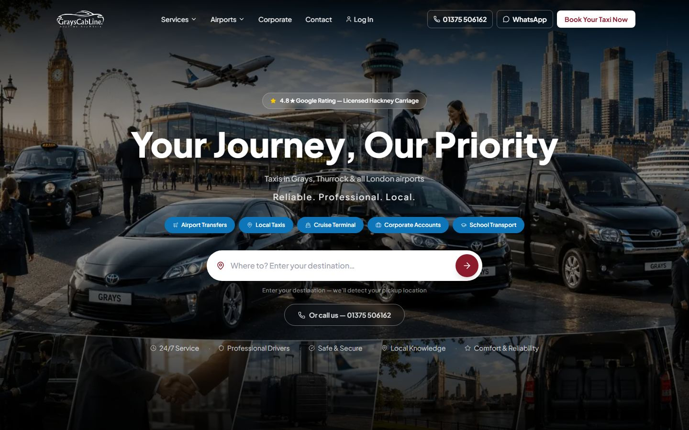
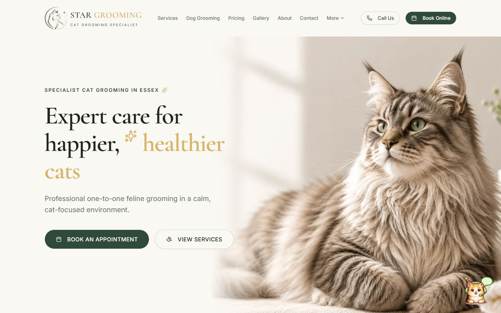
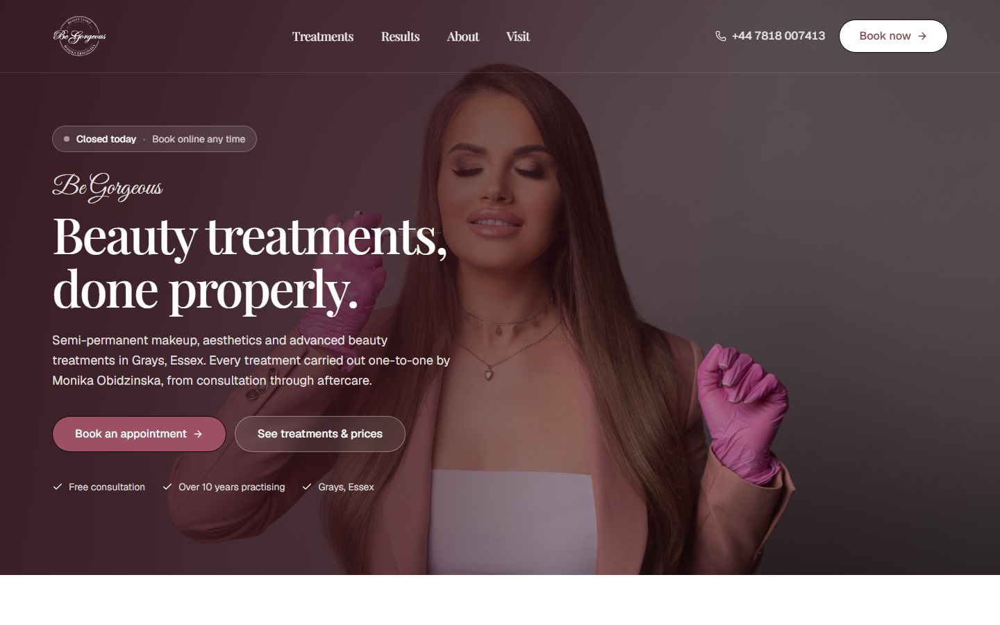

Look the part.
Win their attention.
A distinctive, mobile-friendly website that makes your offer clear and gives customers an easy next step.
Your brand. Your story. Your next customer.
A brilliant website gets you noticed. The right tools turn that attention into bookings, customers and a business that runs better.
We build both. And connect everything.
Real businesses.
Real systems behind them.
Your website should earn its place in your business. We connect what your customers see with what your team needs to get things done.
A distinctive, mobile-friendly website that makes your offer clear and gives customers an easy next step.
Bring enquiries, bookings and payments into a clear flow, with the right information waiting for your team.
A back office shaped around your work. Customer records, day-to-day tasks and useful tools, together.
Your tools are agreed as part of your project. Start with what matters now, then build on it.
Choose an example to see what happens when the website and the business behind it work together.
A visitor finds the right service, sends their details and becomes a lead your team can actually manage.
Make this work for my business ↗Clear services and a focused quote request.
The enquiry arrives with the customer record.
Follow up, organise the work and track progress.
Illustrative workflows. Features and integrations are tailored to your project.

TRANSPORTInstant fares, card payments and a dispatch office behind the booking.
Website + bookings + dispatch
PET CAREA customer-friendly front end with live chat, inbox tools and lead tracking.
Website + enquiries + back office
BEAUTY & WELLNESSA salon diary, customer records and payments that work together.
Website + appointments + paymentsA website is the front door. We can build the working business behind it, with a clear scope and a price that reflects what you need.
Find my right fit ↗Scope comparison, not a comparison with a specific provider. Custom functionality is quoted for your business.
Designers, developers and business owners in your corner. From a first website to a full application, you have one team who understands how it all fits together.
It can be either. We can create a focused website or a full application with a public website, back office and connected tools. We agree the scope around your business before the build starts.
Custom applications, booking systems and integrations are quoted for your project. Monthly plans cover the services listed for that plan. We will explain the build cost and ongoing care separately so you can see exactly what you are paying for.
We start by looking at your existing tools and how your team uses them. Where the software supports an appropriate integration, we can include it in your project. Any third-party costs or limitations are discussed in your quote.
Yes. Show us what you have and what you need it to do. We will review whether improving it, connecting new tools or rebuilding is the right next step.
LaunchFlow offers hosting and ongoing care, with a client portal for support, reports and invoices. Your care plan and any additional ongoing services are agreed alongside the project.
That depends on the design, functionality and integrations your business needs. Tell us about your project and we will give you a written scope, quote and proposed timeline before you commit.
Your next stage deserves
a website that can keep up.